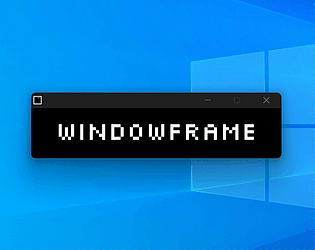
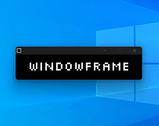

Windowframe is a little experimental puzzle game making use of the widely known capabilities of windows. In order to get to the goal for each level, you will have to move, scale, and stretch the windows in various ways, with some twists here and there. Controls: WASD / Arrow Keys to move Mouse to move, scale, and stretch the windows R to restart Download